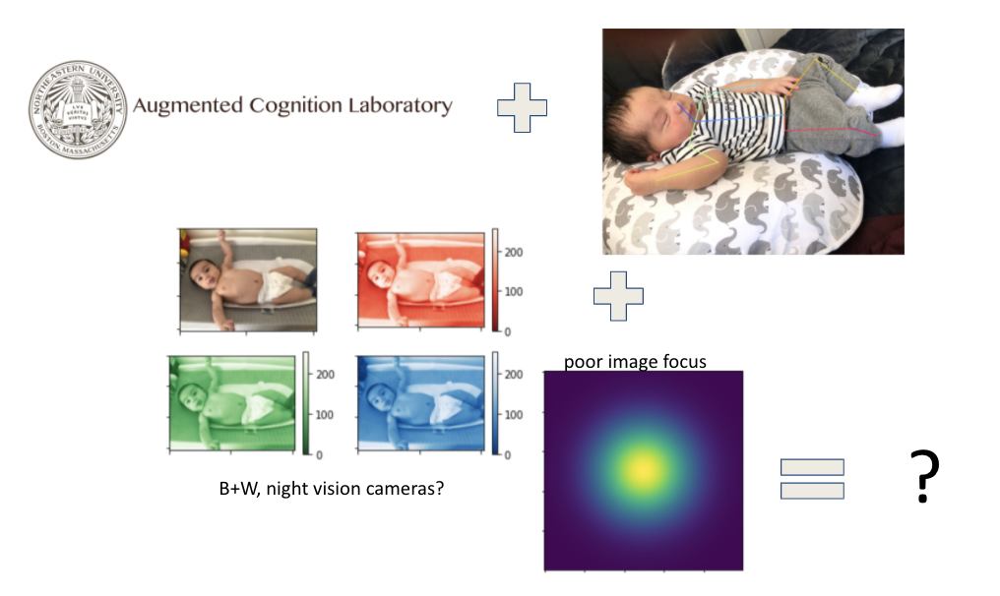

| Paper PDF |

|
Pose estimation and tracking, or the tracking of key anatomical landmarks in video or images, offer insight and are keys to the early detection of certain congenital and developmental neuromuscular disorders, to include Cerebral Palsy (CP) and Autism Spectrum Disorder (ASD). For these, there is no one test used as a diagnostic criteria and longitudinal data through ages 2-3 of life is usually used for diagnosis. State of the art pose estimation model currently close to application in clinic are used here are usually used in high controlled, clinical environments. Here, we set off to look at two physicals layers of RGB channels weights and PSF blur kernels as a means to explore model accuracy and adaptability to non-clinical, non-ideal settings using the Fine-tuned Domain-adapted Infant Pose (FiDIP). The results show that the full image is ultimatly the best at locating key anatomic landmarks, but that RGB channel and blurring have varying and significant effects on this process. This result may arise from certain aspects of the images, to include native lighting, angle etc. Further work is need expanding datasets and examining individual features of images that can aid in pose classification accuracy, with the eventual goal of using similar imaging systems to provide more longitudinal data for earlier detection and intervention in pediatric neurodysfunction. Please feel free to add any additional links that are relevant here. |
|
|
| Paper: |
|
Appendix:
|